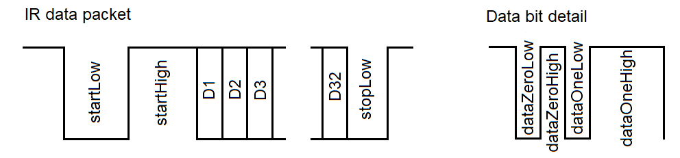

EENG 383
Alternative Final Project| Milestone #1 | March 16 |
| Milestone #2 | March 23 |
| Status | Under development |
Proposal
Remote controls are ubiquitous in the moder household, controlling a variety of household electronics. For a variety of reasons it may be necessary to clone the functions produced by a remote control. Such devices are called Universal Remote controls because they can be taught the button presses of a donor remote and reproduce these button presses on the Universal Remote.Remote Control Basics
The signal output of the remote control decoder is nominally logic 1, meaning that when there is no IR activity the IR remote control decoder module outputs logic 1. When a button on a remote control is pressed, the remote control sends out a sequence of bits consisting of:
- one start bit,
- a set of data bits and,
- half a stop bit.

Figure 1: Left, a typical IR waveform. The 32 data bits, labeled D1 … D32, are detailed at right. Right, the names of the two half bits for a 0-bit (dataZero) and 1-bit (dataOne).
On many remote controls, all the data bits have the same logic 0 half-bit duration (dataZeroLow and dataOneLow in Figure 1), of about 800 µs. It's the duration of the logic 1 half-bit that determines the value of the data bit. A data bit with value 0 will have a high half-bit duration of around 800 µs, labeled "dataZeroHigh" in Figue 1. A data bit with value 1 will have a high half-bit duration of around 1,600 µs, labeled "dataOneHigh" in Figure 1.
If you are using this as your final project starting point, then you should make the following assumptions about your IR data packet. Most IR waveforms for TVs are similar to that shown in Figure 1. Part of your project will involve verifying this structure. You will do this by writing code to "draw" the IR waveform.
- The IR waveform look like the "IR data packet" shown in the image below. The names for the start, data, and stop intervals are provided,
- The IR data packet has 32 or fewer data bits. You need to verify this with your chosen remote and get a different one is this is not the case.
- There are only two different types of data bits. The data bits D1, D2 … D32 drawn as single blocks in the IR data packet when each consist of two half bits shown in detail at right,
- The dataZeroLow and dataOneLow durations are the same,
- There is at least 25ms pause between IR data packets,
- Choose a prescaler for the timer will not roll over when measuring any single duration in the IR data packet.
Level-0
Figure 2 shows the Level-0 diagram of the Universal Remote control (URC). This figure shows that the donor remote control IR waveforms is the main input and the system that we will develop will generate the cloned IR waveform.
Figure 2: Level 0 diagram of the Universal Remote control.
This version of the URC a prototype to demonstrate the proof of concept. As a result, where-as a final product would have function specific buttons for tasks, our URC will use a Putty terminal to configure the function of the URC.
-------------------------------------------------
Start: Lo: startLow µS Hi: startHigh µS
Data 1: Lo: dataOneLow µS Hi: dataOneHigh µS
Data 0: Lo: dataZeroLow µS Hi: dataZeroHigh µS
Stop: Lo: stopLow µS
Half bits: xx half bits per button
-------------------------------------------------
?: help menu
o: k
Z: reset processor
z: clear the terminal
c: count number of half bits
t: determine Time periods for all the bits
d: decode logic 1 periods
r: Report bit width values
l: cLone 4 donor remote buttons
1-4: Transmit IR packet
-------------------------------------------------
The top of the menu shows the status of the donor remote control as
determined by the "c" and "t" commands (more on them later). The name
"startLow" is a reference to duration (in µs) of the first IR
waveform half-bit shown in Figure 1 and will be replaced by a numerical
value corresponding to the duration of this half bit.
| Test name: Donor remote half bit periods | |||||||||||||||||||||||||
| Modules: | IR decoder and PIC | ||||||||||||||||||||||||
| Setup: | PIC function to measure and report all the half bit durations of an IR waveform. The durations will be reported in timer counts. We will then post process the timer counts using an Excel spreadsheet. | ||||||||||||||||||||||||
| Input: | Donor remote button press | ||||||||||||||||||||||||
| Expected output: | Durations for all 7 half bits of the
donor remote measured in timer counts and duration. The average
of the four half bits of the data 0 and data 1 bits will be averaged
in an excel spread sheet and rounded to 1 or 2 significant digits.
Different half period bit durations that are withing about 10% of one
another will be assumed to be equal. This information will then be
put into the table below.
| ||||||||||||||||||||||||
| Count the number of edges in donor IR waveform. | |
| Modules: | IR decoder and PIC |
| Setup: | PIC function will prompt the user to press a button on the donor remote and then report the number of positive and negative edges in the IR waveform. This function is needed because different IR remote controls may have a different number of bits. |
| Input: | Donor remote button press |
| Expected output: | The count of the number of positive and negative edges should be the same. If there are 32 data bits, then there should 66 positive and negative edges. |
| Test name: Donor remote button codes | |||||||||||||
| Modules: | IR decoder and PIC | ||||||||||||
| Setup: | PIC function to decode the logic high half bits of the data bits into 0 or 1 depending on their duration. The durations will be hard-coded into the program based on the results of the earlier test. | ||||||||||||
| Input: | Donor remote button press | ||||||||||||
| Expected output: | Repeatable code outputs for the different
donor remote control buttons.
| ||||||||||||